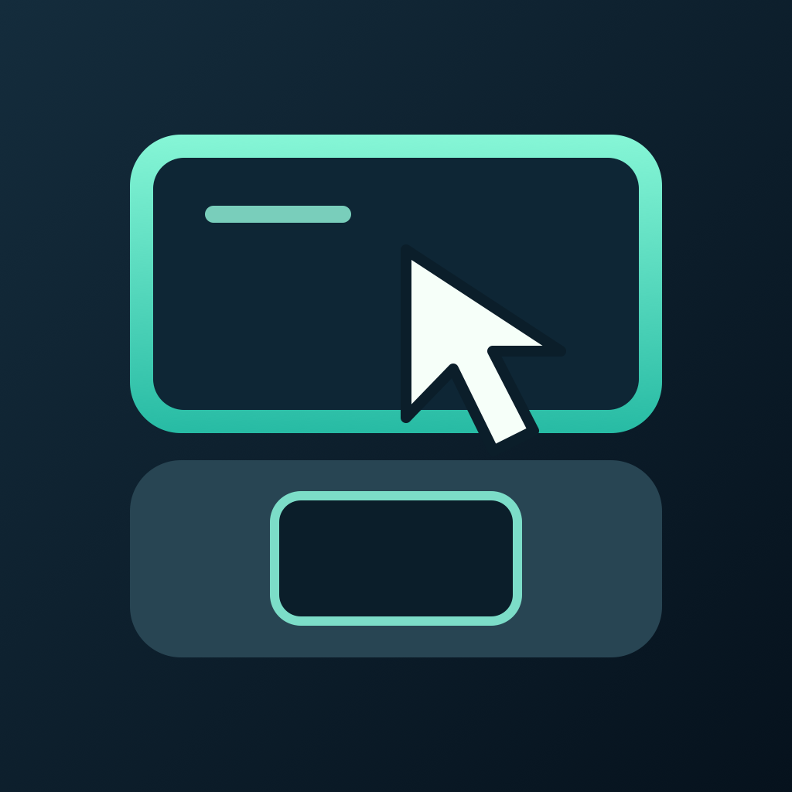

RD Duo · iPhone & iPad
Your Mac.
A better touch.
Precise trackpad control for the quick task that cannot wait until you get back to your desk.

Preparing for release. RD Duo is not yet available to purchase. The Mac companion will be free.
Move, scroll, type. Keep going.
Use a relative trackpad, a direct-touch view, keyboard shortcuts and a magnified view of the details. On a partially folded iPhone Duo, the lower half becomes a trackpad while your Mac stays above it.
A small app with clear requirements.
RD Duo connects an iPhone or iPad to an Apple silicon Mac running macOS 14 or later. It uses a free Mac companion and device pairing. Windows and RDP servers are not supported.
On the go, both devices need a working private network path, such as Tailscale. Your Mac must be powered, awake and signed in. RD Duo does not provide a relay service or wake a sleeping Mac.